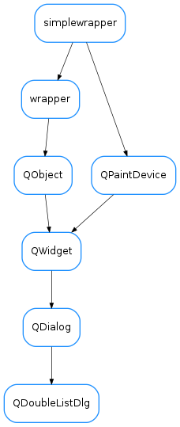

QDoubleListDlg¶

-
class
QDoubleListDlg(parent=None, designMode=False, winTitle='', mainLabel='', label1='', label2='', list1=None, list2=None)[source]¶ Bases:
PyQt4.QtGui.QDialogGeneric dialog providing two lists. Items can be moved from one to the other
-
loadUi(filename=None, path=None)¶
-